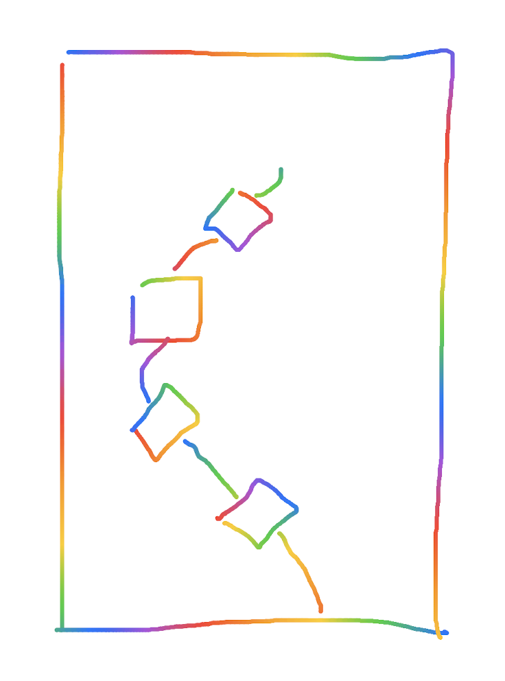

封面



前言
以前有过一个设想，假如一个普通程序员，愿意花费 5 年的时间专心学习和研究某一个技术框架，比如 Spring Boot，5 年的时间足够了解这个框架的多数细节了，那么他在 5 年之后，可以凭借对 Spring Boot 足够深入的了解，写一本《Spring Boot 从入门到精通》之类的书没有问题吧。写出一本书可以带来什么？至少可以增加一些被认可的依据。“写书“的难度大吗？看看现在中文的技术类书籍，哪个不是电子垃圾？然而事实上，大多数 5 年以上工作经验的程序员都做不到“写书“这件事。即使写的难看，毕竟也是有，聊胜于无啊！为什么没有人写？
有多少书写着写着就变成了技术手册？大而全没有重点，有用的没用的全写进去。也许是本着对观众负责的态度，“我写的内容不一定有见地，至少全啊！“这样的逻辑类似于，消费者在买东西的时候，“这个功能我可以不用，但不能没有！“
我也想制造一些电子垃圾了，就像各种无聊的技术博客文章的集合。现在是 2021 年的国庆节假期，正好有时间可以思考一下这件事情。
书的内容会和 Blog 冲突吗？如果有有意思、值得写的东西，应该优先发到 Blog 上。好像也是，不过 Blog 上的内容更多是描述个人经历、表达态度和观点，一直都无法专注尤其是低质量的技术内容。Blog 的内容往往需要字斟句酌，可能最终看到的只有 100 个字，但实际上也许想了 1000 个字，思考好几天，然后去掉不合适的措辞、精简内容、明确清晰观点，剩下了少数简练但有用的内容。
书的内容会更随意一点，为了节省时间，也尽量避免对内容的反复修正。总得有一些新的事情做，这些事情总需要一个开始，你不能等所有材料都准备好了才下锅。如果以后有一天，我有足够写出有价值书的能力，可能就不想写了。
书名借鉴了 Ground-up Computer Science，我暂时没有更好的主意了。内容会聚焦在 Blockchain 上，这个应该没什么问题，这个方向的水很深，有足够的内容可以写。也不需要太多担心机会成本的问题，其他领域并没有更好的选择，
在用语上，可能会直接用一些简单的单词。因为经常出现的情况是，在阅读其他资料的时候看到了某个词并且留下了印象，然后就直接拿来用了，不希望刻意在头脑里翻译一下。比如，这本书的内容没有 magic，就是一些普通的技术大杂烩。
这件事情的周期可能会有点长，预计 1 ~ 2 年左右。希望在 2023 年年底之前，这本书的内容可以初步让自己满意，可以归档 0.9 版本。差的 0.1 用来勘误。
书里具体的内容以思路为主，我们从小就知道“画一条线 10000 美元“的故事，画一条线价值 1 美元，知道线画在哪儿 9999 美元。故事也许不是真的，但故事广为流传，侧面说明故事中的逻辑至少有道理。把代码写出来，远不如知道为什么要写，解决了什么问题，有没有更好的解决办法。
书的目录结构可能杂乱无章，因为不太希望按照结构化知识的方式组织内容，一方面不好操作，有些东西不好分类，另一方面，结构化组织内容的实际效果不一定好，反而会由于一味最求全面而忽略思路和细节。世界上没有“最全“的一个状态。内容可以是主题式、时间线式或者随心所欲的。
按照同样的逻辑，也很容易有 Ground-Up Golang、Ground-Up Programming 之类。Talk is cheap, just do it first.
为什么你需要这本书
原因
如果你没有时间搜索和查找一些技术资料，或者没有兴趣花费大量时间去了解区块链的技术细节，但稍微好奇区块链里面到底有些什么，希望以最容易理解的方式知道区块链的全部，我会替你收集信息并且把可信至少有逻辑有道理的结论写在这里。
如果一些内容是正确的，可以省去你的精力，直接相信这些内容。如果在经过自己的思考后，发现一些内容是错误的，你可以明白我进入了哪些误区，然后轻而易举地避开这些错误，得到更加正确的结论。
在经过一段时间的实践后，也许这里的内容从 “短暂的结论” 变成了 Awesome 类型的索引。没关系吧，总之都是有价值的。
动机
这本书背后有另外的动机，就是作为我的书签管理器。以前尝试过一些整理的形式，比如把收藏的 paper PDF 放到 Github 上的 https://vpb.smallyu.net；用不同平台思维导图分类整理内容的 http://mindmap-share.smallyu.net；后来纯粹放几个链接的 http://bw.smallyu.net；个别放到 Github Gist 上的书签备份 https://gist.github.com/smallyunet/0b54373714039833b04bfbc10d01f461。
在尝试过这样一些方式后，经过分析和对比，仍然没有找到最合适的整理自己收藏的形式。最后选择就用书吧，顺便，有目录、有内容、可以自己写一些东西。我不会再更新那些内容，希望这里可以整合涵盖全部内容。
对标项目
有一些形式相似或者内容相似的项目值得一看，它们都是优秀的对标项目。
- yjjnls/awesome-blockchain 是一个 star 数很高的 awesome 项目，开篇有一张非常吸引人的图片：

- smartcontractkit/full-blockchain-solidity-course-py 是一个针对 beginner 的教程项目，包含了很多对基础概念的解释.
Q&A
这本书的出发点是 “教人” 吗？
当然不是，我没有资格没有资历教别人什么。这本书的出发点仅仅是我自己，出发点应该是分享，在博客、微博、Twitter 等方式之外，还有一些我想要表述但是没有合适平台的东西。
至于可能存在的一些意义，只是说服自己的理由。我知道这本书扑街的可能性很大很大。
这本书算 “书” 吗？
形式上算，内容上不算。没有组织、没有逻辑、结构不严谨，算不上 “书”。
持续完善这本书的动力是什么？
有很多很多东西我一知半解，我会顺便在这里写一点学习过程中的发现和心得，这是唯一的动力。
Summary
区块链是什么
区块链是什么？你可以放心地确信，目前整个世界上还没有准确的定义。区块链这个词来源于哪儿？是谁创造的？没有人知道。起源于比特币吗？比特币并没有提出 Blockchain 这个词。
这一章节从基础的数据结构开始，把区块链最核心的技术形态描述出来。
Linked list
Singly-linked list

Singly-linked list 是一种线性的数据结构， 每个节点都包含一个指向下个节点的 field，用于显式表示节点之间的关联关系，一般在程序中会用对象的引用地址来填充这个字段。当然直接使用节点的值也可以，只是为了在数据类型上有明显的区分。
type Node struct {
Value int
Next *Node
}
func main() {
node1 := Node{Value: 1}
fmt.Printf("%p\n", &node1) // 0x14000104210
node2 := Node{Value: 2}
fmt.Printf("%p\n", &node2) // 0x14000104220
node1.Next = &node2
fmt.Println(node1) // {1 0x14000104220}
fmt.Println(node2) // {2 <nil>}
}
node1 的内存地址为 0x14000104210 ，node2 的内存地址为 0x14000104220 ，然后将 node2 的内存地址赋值给 node1 的 next 变量，这个时候只要访问 node1，就可以通过 next 得到 node2 的内容了。以此类推，即使有很多很多 node，只需要知道起始位置 node1 的内容，就可以访问到整个 Linked list 的所有节点了。
Doubly-linked list

Doubly-linked list 在 Singly-lined list 的基础上，多了一个字段，用于保存指向上一个节点的信息。在这样的数据结构下，获得一个节点的内容时，不但可以知道下一个节点的位置，还可以知道上一个节点的位置。
type Node struct {
Value int
Next *Node
Prev *Node
}
(Doubly-linked list) - (Singly-linked list)
Singly-linked list 时保留了下一个节点的信息，Doubly-linked list 上一个和下一个节点的信息都保留了，那么有没有一种数据结构，是只保留上一个节点的信息呢？比如这样：
type Node struct {
Value int
Prev *Node
}
为什么会需要以保留上一个节点信息的形式，构造 Linked list 呢？因为存在这样一种场景：在创建当前节点的时候，下一个节点的内容和引用地址还不确定或者不存在。
当下一个节点内容确定后，还要更改上一个节点的内容吗？Demo 代码改起来是容易的，如果是在一个海量数据的数据库中呢？update 的成本是很高的；如果是在一个分布式系统中呢？网络交互、数据一致性的成本也很高。

也许这样的数据结构并不差劲，它既没有牺牲 Linked list 的特性，又可以在不改动之前节点数据的基础上，使列表不断延长。只不过访问顺序和 Singly-lined list 是相反的，需要按照从最后一个节点向前的顺序才能遍历所有节点，就像是 Singly-linked list 倒过来了。其实倒过来的 Singly-linked list 也是 Singly-linked list。
Hash function
Hash function
Hash function 用于处理数据和其 hash values 的映射关系，hash values 是数据类似唯一标识的东西，可以用内存比较小的形式标识数据。hash function 有各种各样的实现，可以认为是一个黑盒子，进去的是 data，出来的是 hash values。

比如，我们可以把字符的 ASCII 码作为字符的 hash values：
HASH("a") = 97
HASH("b") = 98
HASH("c") = 99
HASH("d") = 100
对于 2 个字符的 data，就把两个字符的 ASCII 相加，作为 hash values：
HASH("ab") = 97 + 98 = 195
HASH("cd") = 99 + 100 = 199
但是这样很容易发现存在问题，HASH("ad") == HASH("bc") == 197。对于 3 个、4 个甚至更多字符的情形，hash values 重复的可能性更大。
hash values 是允许重复的，但如果存在大量重复，hash function 也就失去了它的作用和使用场景：如果全部都一样，无法区分，还用 hash values 干嘛？
不幸的是，目前最好的 hash function 也无法避免 hash values 重复的问题，只能尽可能减少 hash values 重复的概率，比如用类似数据库分库分表的方式，给每个字符足够的余量。
我们可以重新设计一下我们的 hash function，在只有 1 个字符的时候，仍然使用 ASCII 作为输出。在有 2 个字符的时候，让 第 1 个字符乘以一个基数，再加上第 2 个字符。由于第 1 个字符在乘以基数后会足够大，无论第 2 个字符是什么，在其基础上加上第 2 个字符的 ASCII 码，应该不会重复。
HASH("ab") = 97 * 1000 + 98 = 97098
HASH("cd") = 99 * 1000 + 100 = 99100
HASH("ad") = 97 * 1000 + 100 = 97100
HASH("cd") = 98 * 1000 + 99 = 98099
这样至少解决了 2 个字符 hash values 重复的问题。
推广到更一般的场景，在面对可能很多字符的情况下，基数使用质数以避免累加造成的重复，为了保证基数足够大，使用质数的不同次方分别作为每个字符的基数，公式为：
hashCodes = char1 * base^(l-1) + char2 * base^(l-2) + ...
hashCodes 是输出的 hash values，char1 是第 1 个字符，char2 是第 2个字符，base 是基数，l 指字符串的长度。对于 3 个字符长度的字符串，第 1 个字符的基数就是质数的 2 次方，第 2 个字符的基数是质数的 1 次方，第 3 个字符是 0 次方，以此类推。
如果质数选择为 31，hash function 的实现为：
public static int hashCode(byte[] value) {
int h = 0;
for(int i = 0; i < value.length; ++i) {
h = 31 * h + value[i];
}
return h;
}
也许具体的代码不是完全符合直觉，但你可以相信，和上面描述的公式是一致的。
hashCode("a") = 97
hashCode("ab") = 97 * 31 + 98 = 3105
hashCode("abc") = 97*31^2 + 98*31 + 99 = 96354
这就是 JDK (Java Development Kit) 中 hashCode 的实现方式。
Cryptographic hash function (CHF)
不难发现的是， hash function 比较容易根据 hash values 反推出原始的 data 是什么。我们可以写出这样的程序，假设我们已经知道字符长度是 2，由于字符使用 ASCII 编码，范围在 0 ~ 255，因此设 x 和 y 两个变量，枚举所有符合目标 hash values 的情况：
public static String deHashCode(int code) {
for (int x = 0; x <= 255; x++) {
int y = code - 31 * x;
if (y < 0 || y > 255) {
continue;
}
System.out.println(((char) x)+","+((char) y));
}
return "";
}
比如当 hashCode = 3105，得到的输出是：
\,ý
],Þ
^,¿
_,
`,
a,b
b,C
c,$
d,
原始数据 ab 就出现在了为数不多不多的可能性中。
那么有没有办法减少 hash values 推出原始 data 的方法？在 Public-key cryptography 中 % 可是起到了很大的作用。hash function 也可以与一些加密算法的原理结合。
cryptographic 是 hash function 的修饰词，即使用了加密算法的 hash function。

md5 是使用非常广泛也接近过时的一种 cryptographic hash function，可以把任意长度的 data 计算输出为 128 bit 的 hash values。
md5("a") = 0cc175b9c0f1b6a831c399e269772661
md5("ab") = 187ef4436122d1cc2f40dc2b92f0eba0
md5 的加密原理步骤很多，是一种不可逆的、单向的 hash function，无法轻易根据 hash values 得到 data。md5 的输入可以是任意大小的，1 GB 的二进制文件也可以hash 为 128 bit 的字符串。
md5 之外，SHA-1 的安全性更高，BLAKE2 的计算速度更快，它们都是典型的 cryptographic hash function。
Serialization
序列化是编程中很常见的一种操作，主要用于把复杂格式的数据转化成易于在不同环境中统一处理的格式，类似于定义一种接口格式，便于网络传输。

把数据转换为统一的过程称为 serialization，从统一格式转换为特殊格式的过程为 deserialization。JSON stringify 的过程也可以认为是一种序列化：
let object = {
field1: "abc",
field2: 123
}
let str = JSON.stringify(object)
print(str) // {"field1":"abc","field2":123}
Serialization + CHF
可以明确的是，JSON stringify 的结果是一个字符串，这个时候就可以和之前的 cryptographic hash function 结合起来用了：
md5(str) = d79152b724c5f1e52e6bd4bfaf6e1532
只要定义过数据的 serialization 方法，我们就可以得到任意数据格式的 hash values。
Serialization + CHF + Linked List
Linked list 之间的关联关系常用变量的引用地址表示，但指针不是惟一的方式，数据结构的含义也可以扩展到更大的范围。我们完全可以用节点数据的 hash values 作为关联：

98 是 b 的 hash values，表明值为 a 的节点，下一个节点的 hash values 为 98，也就是值为 b 的节点。
我们也可有使用反向的 linked-list：

a 的 hash values 是 97，表明值为 b 的节点，上一个节点的 hash values 为 97。
当然，这里的值可以是更复杂的数据结构，只要定义好 serialization 格式，也可以应用到更复杂的 hash function 上，比如这样正向的 linked-list：
type Node struct {
Value int
Next string
}
node1 = Node{ Value: "a" }
node1_str = JSON.stringify(node1) // { "Value": "a" }
node1_hash = md5(node1_str) // 9ad06e8a44d0daf821f110794fb012c7
node1.Next = node1_hash
这就构建好了一个节点，以此类推。
另一种也许更好或者更适用于某种特定场景的形式是，将其改为反向的 linked-list：
type Node struct {
Prev string
Value int
}
node1 = Node{ Value: "a" }
node1_str = JSON.stringify(node1) // { "Value": "a" }
node1_hash = md5(node1_str) // 9ad06e8a44d0daf821f110794fb012c7
node2 = Node{ Value: "b" }
node2_str = JSON.stringify(node2) // { "Value": "b" }
node2_hash = md5(node2_str) // 7e332b78dbaac93a818a6ab639f5a71b
node2.Prev = node1_hash
这种反向的 linked-list 就是区块链的基础数据结构。
Peer-to-peer network
网络发现是点对点网络的基础，毕竟网络需要多个节点组成，而这多个节点需要一些机制来相互认识。
一般常用的机制是预置一些种子地址，比如比特币的种子地址列表在 https://github.com/bitcoin/bitcoin/blob/master/contrib/seeds/nodes_main.txt。
节点会请求种子地址指向的节点，然后获取到种子地址拥有的节点列表信息。
Consensus
共识算法是在分布式系统中，各个节点达成数据一致性的方式。
Fork
Hark fork
Soft fork
References
区块链能干什么
区块链能干什么？这一章节详细列举目前区块链的应用场景。
UTXO
在加密货币中，比如比特币，UTXO 是一种抽象的交易结构。每个 UTXO 都相当于一种特殊的硬币，这个硬币内部是链式的数据结构，记录了这个硬币代表资产的所有权。内部的链式结构是由数字签名后的消息表示关联关系的，资产拥有者用接收者的公钥对消息进行签名。
Reference:
Account/Balance Model
账户/余额模型是传统的账户模型，区别于比特币的 UTXO 模型，账户/余额模型需要保存用户余额的状态，以太坊采用了这样的方式，也因此以太坊存在世界状态一类概念。
Reference: UTXO VS. ACCOUNT MODEL
Decentralized application
去中心化的 APP一般特指运行在以太坊上的基于智能合约的应用。
Reference: Chapter 1. What Is a Decentralized Application?
DIDs
为什么需要 DIDs
References:
简介
去中心化的数字身份是 Web 3.0 的重要组成部分，特点是用户自主拥有数据的所有权，
References:
案例
Applications:
Decentralized Autonomous Organization
Reference: What is DAO (Decentralized Autonomous Organization)?
Non-fungible token (NFT)
NFT 提供了一种证明数字资产所有权的方案。
Reference: Non-fungible token
InterPlanetary File System
简介
IPFS 是著名的去中心化文件系统。
References:
IPFS 的问题
预言机是什么？
预言机是一种用来连接真实世界数据和区块链内部数据的桥梁。预言机往往会规范一套 API 供区块链使用。
预言机的分类：
- Software oracles
- Hardware oracles
- inbound and outbound oracles
- Centralized and decentralized oracles
案例：
- Chainlink
References:
Matrix
Matix.org 提供了基于区块链设施的即使聊天系统为人所知，Gitter 也是基于 Matrix 的网络协议。Matrix 提供了非常丰富的客户端，不过目前的使用体验不算很好，聊天消息的网络延迟比传统 IM 软件要高。
References:
区块链的过去
简介
以史为镜，可以知兴替。这一章节会讲述一些标志性区块链项目的技术特性，以及组成区块链的技术更详细的分类和内容。
索引
区块链项目白皮书搜索和查阅网站。
比特币
白皮书
摘要：一种纯粹的点对点的电子现金，应该实现从一方到另一方的直接交易，而不需要经过第三方的金融机构。数字签名能够在一定程度上解决这个问题，但是仍然需要可信的第三方进行交易的转发。我们设想一种能够解决“双次交易”问题的点对点网络，这种网络基于链式数据结构的工作量证明，每一笔交易都用它自己的哈希值作为唯一标识，并且数据内容无法修改。如果想要修改，就要攻破整个基于工作量证明的网络。最长的一条链不仅代表它有最可靠的内容的证明，还代表它拥有最强大的 CPU 算力。没有最强 CPU 的节点，是没有能力攻击网络的，它的攻击内容会被最强 CPU 的节点忽略。这种网络本身只需要最简单的架构，允许节点发送和广播消息，可以随时加入、退出、重新加入网络，并且接收工作量证明最强大的拥有最长链的节点的数据。
Reference：Bitcoin: A Peer-to-Peer Electronic Cash System
关于块总数
Reference: What Happens to Bitcoin After All 21 Million Are Mined?
下一代智能合约和去中心化应用平台
白皮书
过去的几个月，很多类似比特币的区块链进入了不同的领域，区块链的机制允许全世界的人维护一个公共的、数据状态实时同步的数据库。很多应用都是用在区块链上的数字资源表示自定义的货币或者金融财产，比如用区块链上的数据跟踪用户是否是汽车的合法拥有者，或者更多像去中心化交易所、金融衍生品、点对点赌博游戏、数字身份和信用系统的应用等。在所有应用中，最有野心的可能就是“去中心化的自治组织”的概念，分散的实体在区块链上进行一些自动的操作，不需要中心化的控制，不依赖任何法律定义的章程，可以在区块链上自动执行可以自主管理的合同。
然而，今天的大多数应用实现起来都很困难，比如区块链的脚本系统，或者号称是下一代加密货币协议的一些项目，在实现复杂的计算和去中心化治理的时候都收到很多限制。这个项目的目标就是要带来一些创新，可以创建一种完整的、图灵完备的、加密的、复杂的智能合约，并且允许合约在节点上自动执行，合约的内容将记录在区块链上。用户不会受限于某种特定类型的交易，用户可以把以太坊作为加密金融的乐高，通过使用以太坊协议支持的脚本语言，很简单就可以实现用户想要实现的任何特性。自定义货币、金融资产、数字身份系统等任何特性都将变得非常简单，不同于已有项目是，以太坊甚至支持自定义交易的结构，这是开发者以前难以想象到的重要特点。我们相信这种设计是“加密货币 2.0”坚实的一步，我们希望以太坊可以像 1999 年 Web 2.0 的出现一样，成为加密货币历史上的一个重要里程碑。
Reference：A Next-Generation Smart Contract and Decentralized Application Platform
索引
这是一个分享关于 ethereum 想法的论坛。
波卡链：一种异构多链框架
白皮书
简介：当今的区块链架构有很多问题，像扩展性、扩容能力，而且不止于此。我们相信，共识的两个重要组成部分是规范性和可验证性。这篇论文介绍了一种异构多链的框架结构，从根本上将两者区分开。
在保证这两个组成部分的最小实现的前提下，这种架构提供了强大的扩展能力。采用分而治之的方式，公共节点可以在核心系统上无需信任就可以进行通信。
这种异构系统最大限度的做到无需信任、完全去中心化，将允许各种公开或者私有的网络能够轻易相互通信。
这个框架可以很好地兼容已经存在的区块链。我们相信这将成为区块链在全球范围商业化实用化的重要基础组件。
Reference: POLKADOT: VISION FOR A HETEROGENEOUS MULTI-CHAIN FRAMEWORK
Solana
简介
Solana 是一个开源项目，实现了一个新的、高性能的区块链。Solana 是用 Rust 写的。
References:
白皮书
Solana 使用了 Proof of History 来提高交易速度。
Reference: Solana: A new architecture for a high performance blockchain v0.8.13
Cardano
Cardano 是用 Haskell 实现的。
References:
Zcash
Zcash 是第一个广泛使用 zk-SNARKs 的应用。
References:
Ripple
Ripple 发行了加密货币 XRP。
Consensus
Ripple 使用了自己的共识算法 Ripple Protocol consensus algorithm (RPCA)。
Reference: The Ripple Protocol Consensus Algorithm
稳定币
简介
稳定币是指一比一铆钉美元的加密货币。
Tether
Tether 是稳定币 USDT 的运营方。
References:
USD Coin
USDC 和 USDT 一样，是一种稳定币。
Reference: USD Coin
DAI
DAI 是一种去中心化的稳定币。
Reference: MakerDAO
比较
References:
Terra
TerraUSD 也是一种稳定币。Terra 本身也是一种加密货币。
References:
区块链的未来
区块链未来会向什么趋势发展？同样没有人知道。也许未来的区块链会采用非链表式的数据结构。
Reference: Blockchain vs. Hashgraph vs. Dag vs. Holochain
基于 Multi-linked list 的区块链
区块链有没有可能不再是线性的结构，而是有多条链路的、图式的数据结构呢，比如从 singly-linked list 进化到 multi-linked list。假设是 mul ti-linekd list 的形式，会给区块链带来什么样的变化，或者说，可行吗？
首先是正向的 multi-linked list，像是这样：

然后是适用于区块链的、反向的 multi-linked list，像这样：

对于 multi-lineked list，一种是固定数量的情况，比如每个节点的后续节点一定是 2 个，或者是不固定数量的 multi-linked list，每个节点可以指向任意多个子节点，它们的区别不大。
还有一个分歧是要不要保留块高度的概念，块高度是用来表示块顺序的索引，在多个节点之间同步数据的时候起到很重要的作用，在 multi-linked list 中，如果按照树结构层数来定义块高度，会是这样：

或者可以按照块写入的顺序定义，也就是初始的标号意味着块高度：
对于区块链来说，很重要的是确认数据的完整性，当只有一个子节点的时候，其他节点很容易同步一个块的数据，并且根据 hash values 校验块的有效性。对于 multi-linked list 的情形，这个校验块数据的步骤会复杂一些，但也并非无法处理，只要把原先校验一个块的操作，多几次循环，多校验几次就可以了。
正向和反向 multi-linked list 最大的区别是，一种是向外发散的，会随着层级的增大，每一层容纳的节点数不断增大，指数级增长。另一种是收敛的，每一层的节点数会不断减少，最终只剩下一个。也就是正着的树和倒着的树的区别。

区块链中有一个创始块的概念，如果是正向的 multi-linked list，创世块还是一个保持不变，但是子节点逐渐膨胀以后，会越来越不可控。对于保留块高度的情况，其实除了程序处理多几个步骤，并没有无法实现的理由。对于不保留块高度或者说用索引值代替块高度的情况，块仍然可以一个一个地出，也没有在技术上实现不了的理由，但其实还是链式结构的处理方式。单纯数据结构从 linked list 转为 multi-linked list，似乎没有明确的理由，因为无法想象到，这样做可以带来什么样的好处。

如果是反向的 multi-linked list，一个很大的问题是创世块怎么办，反向的树结构子节点会越来越少，最后只剩一个，难不成创世块规定足够大数量的节点数，然后后期逐步趋于1？这非常不合理，相当于给程序设置了一个停机条件，到达一定块高度后就无法在增加内容了，显然是不可取的做法。
由于树结构的发散或者收敛，multi-linked list 的设想是有问题的。那么这样呢，使用平行的 multi-linked list，可行吗？

因为必须有多个输入和输出，并且输入和输出的数量必须一样，所以使用这样带有重复指向的方式。
同样地，在技术上可行，问题在于，有什么好处呢？这样的数据结构带来了什么？除了程序复杂程度的增加，还有什么？
好像还真有，这样的数据结构，允许同时出两个块。两个节点只要使用相同的父节点，即使没有先后，同一时刻产生了内容，也可以将块累加到链后面，作为子节点。
不过这样又回带来很多问题，比如怎么防止 double-spending ？同一个账户交易分别出现在了两个块里，以哪个为准？分布式系统的数据同步，一定是多点变单点的过程，并行处理的程序也会有一个资源竞争的问题，同时出两个块后还是需要某种机制单点处理数据，同时出块就没有意义了，并不能加快整个系统的数据处理速度。
而且，其实平行的 multi-linked list，可以认为是这样：

这样来看，平行的 multi-linked list 就更没有意义了。
总的来说，区块链有可能基于 multi-linked list 的数据结构吗？似乎没有必要。singly-linked list 是简单的数据结构，但又确实是很适合于区块链的数据结构。
基于 Directed acyclic graph 的区块链
基于 DAG 的区块链似乎并没有很多成功的案例。数据结构如果变成了图，整个系统的复杂度会增加非常多。这篇论文标题是把这种类型的区块链应用到物联网场景中，但是由于内容不能免费下载，就没有看。
Reference: A Blockchain Solution based on Directed Acyclic Graph for IoT Data Security using IoTA Tangle
基于 Hashgraph 的区块链
Reference: Hashgraph
区块链的共识概览
摘要
区块链网络包含了一些密码学概念，包括非对称加密、哈希算法、共识算法等。尽管现在的一些主流协议被广泛使用，像 Proof of Work 和 Proof of Stake，但它们仍然有缺陷。为了能让共识算法能应用在医学或交通等更多领域。有很多其他协议由此诞生。虽然那些协议有一些值得研究的特性，但还相对不为人知。过去的时间里，有很多新的协议也应用到了区块链中，不过也数量有限，并不能包含大多数的情况。对这些共识算法在设计上的特点进行分析，可能会有助于学者、区块链从业者、研究人员有所帮助。这篇论文包含了过去 3 年新提出的共识协议，我们最终通过吞吐量、安全性、能源消耗等指标评估它们的整体性能，我们分析了这些共识协议在可扩展性和性能上做的权衡。据我们所知，这是第一篇涵盖对这些协议特性分析的论文，强调了这些共识协议的特点以及有可能用于未来共识协议设计的内容。
一些知名的共识协议
Proof of work
最广泛使用的共识协议是 Bitcoin 在 2009 年的简介中出现的 PoW，通过算力胜出的参与者可以向区块链增加新的块。一旦块提交到网络并且被接受，提交者就可以获得网络的出块奖励以及其中交易的手续费。计算的算力将被用来解决一个哈希难题，计算的结果会写在产生出的块中。
Delayed Proof of Work
dPoW 被用在一个叫 Komodo 的多链结构的平台中。这种共识协议中存在一个第二层的网络节点，这些网络节点使用 PoW 出块提交到主链上。第二层一共 64 个节点，每年通过投票选出。这样的做法避免了额外的算力浪费。
Proof of Stake
PoS 是一种对 PoW 去其糟粕，取其精华的协议。参与者必须拥有一些系统中的加密货币才可以挖矿或者进行交易的验证。如果一个节点拥有 10% 的货币，那他挖出下一个块的概率就是 10%。PoS 共识协议中，块只由提案节点产生。提案节点同时也是验证节点，验证节点可以根据比例分配得到出块产生的奖励。网络中所有想要参与出块的节点，都必须质押一定金额到网络中。另外，协议中的提案节点将会随机选出一个主节点，主节点负责根据投票结果，决定接受或者拒绝新产生的块，一般投票数量超过 2/3 为通过。
Delegated Proof of Stake
DPoS 是 Pos 衍生出的一种协议，将权益拥有节点与验证节点分离，强调了选举的过程。
Proof of Authority
POA 中存在一类被信任的节点，由这些被信任的节点处理交易和块。由于这些 validator 的数量是有限的，整个网络的性能可以非常高，并且拥有良好的扩展性和接近于 0 的手续费用。POA 不需要像 POS 那样质押资产，但是 POA 质押的是节点自身的声誉。声誉可以通过累积参与到网络中的时长增加，这克服了 POS 越是富有的节点越会获得更多激励的问题。不过，POA 是强中心化的，整个网络被控制在少数节点手中。
Proof of Importance
PoI 依赖 importance score 评估节点的价值，授予节点权限，拥有资产越多，importance score 越高。低于某一种数额的节点将无法参与块的创建。这样的共识机制意在保护整个网络。
Practical Byzantine Fault Toerance
PBFT 是拥有 1/3 容错能力的共识，解决了经典的拜占庭容错的问题。提案节点将产生出的块分发给其他所有节点，如果超过 2/3 的节点投票通过，则确认该块。
Ripple Protocol
Ripple 或者叫 XRP 节点共识协议，属于 BFT 共识的一种。validators 会维护一个待执行的交易列表，这些 validators 是诚实节点。当一定数量百分比的节点同意某一个交易集，这些交易将被包含在下一个节点版本中。如果交易集没有通过，节点也会通知其他节点重新处理这些交易。这是一个持续的处理过程，共识可以达到至少 80% validators 的状态是一致的。不过，如果没有达到预期一致的效率，就可能面临网络被攻击的风险。
Delegated Byzantine Fault Tolerance
DBFT 类似国家的治理系统，有公民、选民、代表等角色，共同管理国家。这种协议依赖投票的程序，类似于 PoS，每个节点都可以投票，随机选出一些代表。选民负责回应和跟踪所有公民的行为。被随机选出的代表负责块的提案，选民参与块数据的验证。块的产生同样需要 2/3 选民同意。不过，如果有 2/3 的选民投票选出新的代表，块的提案过程会重新来过。
Federated Byzantine Agreement
FBA 在所有的节点中划分出一个子节点的集合，新产生的块将由这个集合中的节点确认，并且这个集合会频繁的更新。
Proof of Elapsed Time
2016 年，Intel 发布了 PoW 的替代方案 PoET，Hyperledge 的 Sawtooth 项目使用了这种共识机制。PoET 使用一种随机的机制，参与节点等待一个随机的时间值，最新的块将由随机时间最短的节点产生。将块广播到网络的同时，块数据包含本次等待的这个最短时间，用于其他节点确认真伪。这样的共识机制比 PoW 更加去中心化，但是它也有一些问题，不太适用用公有链，因为这样的共识会让整个网络变得混乱，不是足够稳定。另外，PoET 需要使用 Intel 的专用硬件，给这种共识机制的推广带来了困难。使用这种共识机制的前提是，我们需要信任运行节点的硬件设备。
Proof of Burn
PoBr 不像 PoW 或者 Pos 一样需要强大的算力挖矿，PoBr 采用了另一种思路，节点可以通过销毁 token 争夺最新块的记账权，也就是使用短期内的损失换取出块后的更大奖励。相当于节点质押金额进去挖矿了。这样的共识算法节省了硬件资源的消耗，Slimcoin 是典型的 PoBr 的例子。
Proof of Capacity
PoC 是一种基于磁盘容量的共识机制。PoC 使用一些方式证明节点的可用容量为某一些数值，整个区块链网络会将这一部分容量用以为其他节点提供服务。可用容量的大小即节点的贡献值，节点根据提供空间的大小获得奖励。PoC 一般使用 hard-to-pebble 的图结构证明节点的可用空间大小。
可替代的协议
这一部分我们会讨论 15 种近 3 年的可供选择的协议。这些协议可以按照这样的方式进行分类：
- Consensus Protocol based on Effort or Work (CPE)
- Consensus Protocol based on Wealth or Resources (CPW)
- Consensus Protocol based on Past Behavior or Reputation (CPPB)
- Consensus Protocol based on Representation (CPR)
Consensus Protocol based on Effort or Work
Proof of Benefit
Proof of Phone
Proof of Learning
Proof of Sincerity
Proof of Accuracy
Proof of Adjourn
Proof of search
Proof of Evolution
Proof of Experience
Consensus Protocol based on Wealth or Resources
Proof of Participation and Fees
Consensus Protocol based on Past Behavior or Reputation
Proof of Familiarity
Proof of Reputation
Proof of Reputation X
Consensus Protocol based on Representation
Proof of Vote
References
Paxos
References
工作量证明
Reference: Proof of work
Proof of Burn
Reference: Proof of Burn
Proof of Transfer
简介
Reference: Proof of Transfer
Proof of Block Space
References: How to fix Bitcoin’s long term security problem
Proof of stake
以太坊使用了衍生自 PoW 的共识机制，叫做 PoS。以太坊的社区中经常有一些对共识机制改进的计划。不过在网络中没有使用 PoW 而使用 PoS 确实是一个很大的技术挑战。
PoS 是什么？
PoS 需要用户质押 ETH 成为网络中的验证节点，验证节点类似于 PoW 中的挖矿节点，负责对交易进行排序并产生新的块，然后将数据同步给整个网络。
PoS 比起 PoW 有一些优点：
- 更节省电力，不会无意义挖矿
- 减少对硬件性能的依赖，不需要完成挑战出块
- 对中心化更强的免疫力，PoS 允许大多数节点参与到网络
- 对 shard chains 更好的支持，这是一种重要的 scaling 方案
References
Proof of authority
Reference: Proof of authority
Proof of History
Reference: Proof of History: A Clock for Blockchain
Proof of Elapsed Time
Reference: On Elapsed Time Consensus Protocols
Proof of Efficiency
Reference: Proof of Efficiency: A new consensus mechanism for zk-rollups
Proof of data possession
References
Practical Byzantine Fault Tolerance
References
Casper the Friendly Gadget
References
Casper the Friendly Ghost
References
Swarm consensus
Reference
基于文件的证明
简介
Proof of space 有 3 种小的分类，或者说另外的叫法，意思应该差不多：
- Proof of storage
- Proof of capacity
- Proof of space-time
Reference:
这个是 IPFS 对 Proof of Storage 的解释：Proof-of-Storage
三种类别之间还是有区别的：Proof of Capacity Vs SpaceTime Vs Space Vs Storage – The Difference
Proof of Replication
References:
智能合约专题
智能合约是 Blockchain 从 1.0 到 2.0 转变的关键标志。
Bitcoin Script
Bitcoin script 是一种非图灵完备的脚本，可能甚至谈不上语言。Bitcoin script 使用操作码 opcode 来定义动作，使脚本支持有限的自由操作。
Reference: Script
Ethereum Vitrual Machine (EVM)
简介
EVM 很难被描述为云集群之类的概念，但是它存在并运行于上千个以太坊客户端中。
以太坊的协议本身需要维护一个不可中断的、不可修改的特殊状态机，状态机内包含了以太坊账户和智能合约的环境。链上所有的区块，以太坊都对它有一个独一无二的状态，EVM 就是定义这种状态规则并且计算出新状态的东西。
Reference: ETHEREUM VIRTUAL MACHINE (EVM)
Gas
以太坊中有三个 Gas 相关的变量： Gas limit、Gas price、Value。
GasLimit 是一笔交易消耗的计算资源上限，GasPrice 是 Gas unit 的单价。GasLimit 用以保证计算资源的消耗是可控的，GasPrice 控制整笔交易的手续费维持在市场平均水平。
References:
Solidity
Solidity 是一种编写以太坊智能合约的专用脚本语言，语法上是面向对象的语言，内置了一些区块链相关的对象，如交易、时间戳、块高度等。
Solidity 由于属于 DSL 的特性，在语言本身上是无法和目前的主流编程语言抗衡的，但我们不需要对它有什么要求。
Solidity 中稍微有趣的特性是 modifier，比如：
modifier A() {
// some code
_;
}
modifier B() {
_;
// some code
}
function getData() A B {
// some code
}
modifier 是可以自定义内容的修饰符，_ 代表 getData 函数体，意为在 A 中执行 some code，然后执行函数，在 B 中执行函数，然后执行 some code。
modifier 的好处是，可以省去很多重复性的代码，像是一些相同的参数校验，我看到过一些这样的代码：
func a() {
if obj != nil {
return
}
}
func b() {
if obj != nil {
return
}
}
// ...
如果有 modifier 就可以在视觉上很好的解决这种难堪的写法。
不过 modifier 的问题是，它会让函数的定义变得丑陋，因为 modifier 是不限制数量的，这对代码美感的破坏性甚至超过重复写一些相同的代码。
另外，Python 的 deorators 似乎也是在解决和 modifier 类似的问题，Java 的 annotaion 也是。modifier 并不算是多么独到的特性。
Yul
Yul 是一种中间语言，和 Solidity 没有同等的地位，它似乎不是一种值得去了解的语言。
我们使用这些语言的目的应该还是要开发智能合约而已，而不是学习编程语言。
References
概览
为什么需要 Scaling
References:
简介
性能概览:
| Solutions | TPS |
|---|---|
| State Channels | 10,000 |
| Plasma | 7,200 |
| ZK Rollup | 4,500 |
| Optimistic Rollup | 800 |
Rollups 方案的分类：

References:
Zk-Rollups
用零知识证明来扩展以太坊。
Reference: How Zk-Rollups Work
Starkware
StartkEx 是一种基于 validity proofs 的以太坊 Layer 2 方案。
Reference: Starkware’s documentation
zkPorter：一种 L2 方案的突破
Reference:
StarkNet
References:
Polygon
References:
Optimistic rollups
Reference: Optimistic Rollups: How They Work and Why They Matter
Optimistic Ethereum (OE)
Optimistic 是以太坊上的一种针对以太坊应用的交易扩容协议，它可以让交易真正变得便宜，让每个人都轻易使用、都能够负担起在以太坊进行交易的费用。
这个文档向所有想深入了解 optimistic 协议的人解释协议的工作原理。
Optimistic Ethereum 意味着和以太坊一样的使用感受，但是速度更快、费用更低。开发者可以基于我们的框架进行操作，我们也在尽可能让协议的使用变得简单。除了个别例外的特性，所有能在 L1 上运行的 Solidty 合约都可以在 L2 上运行。同样的，链下应用也只需要改变接口地址就可以无缝衔接使用。
References:
Arbitrum
动机
Reference: Beyond State Channels
简介
Arbitrum 有和 Ethereum 一样的 API 接口，支持 Ethereum 所有的语言，不需要更改任何内容或者下载任何新的软件，就可以无缝从 Ethereum 切换到 Arbitrum。
Reference: Arbitrum Rollup Basics
协议设计
Reference: Arbitrum Rollup Protocol
State channels
状态通道是 Layer 2 的方案之一，在两个节点间建立通道，允许节点间的链下交易。
闪电一样的比特币网络：可扩展的即时支付系统
比特币协议支持全球量级的金融电子交易，不需要第三方机构持有资金，交易双方只需要一台可以通过宽带连接的计算机就可以。这里提出一种支持线下交易的系统，可以随时随机使用网络进行小额交易。这些小额交易可以发生在相互不信任的节点之间，这些节点通过在链上合约进行登记建立关系。如果遇到了恶意节点，合约将通过一系列按照时间锁定的事件强制执行交易。
Reference: The Bitcoin Lightning Network: Scalable Off-Chain Instant Payment
Raiden Network 是什么？
雷电网络是针对以太坊 ERC20 的一种链下交易扩容方案，允许即时的、低手续费的、可扩展的、保护隐私的交易。
Reference: What is the Raiden Network?
Celer Network
Celer Network 号称结合了 State channels 和 Rollup，提供了一个 layer2 平台用于 DeFi。
References:
Perun
Reference: Perun 2.0
Counterfactual
Reference: Counterfactual: Generalized State Channels on Ethereum
Virtual channels
在这篇文章里，我们描述一种状态通道的架构叫做“虚拟通道”，它是唯一支持像付费文件的流式支付之类的架构。虚拟通道可以简化去中心化系统中图式结构的交易查询、Filecoin 内容检索、状态通道网络中的奖励机制等。
动机
让我们设计一种不需要信任的支付系统，用于在分布式储存系统中下载文件。如果使用以太坊的主网络，每下载文件的一个小部分，都需要支付最低 2 美元的手续费，而且以太坊每秒钟只能完成 50 笔交易。Optimistic 和 ZK Rollups 都可以增加系统的吞吐量、降低手续费。StarkEx 的 ZK Rollups 支持每秒钟 3000 笔交易的速度，手续费低至 0.03 美元。假如我们要用 1 美元的钱去下载 1GB 的文件，一个文件的分片大小是 256KB，将会产生 5000 笔交易。在网速是 20MB 每秒的情况下，用户需要以 0.0002 的手续费每秒完成 80 笔交易。Rollups 的交易速度好像稍微不太够，手续费更是超出预期了。
对于这样吞吐量和手续费的需求，状态通道的方案开了一个好头。状态通道可以在打开通道后，尽情在通道的两个节点间进行交易，吞吐量只受限于网络带宽。唯一的挑战就是节点需要和其他很多个节点打开通道，打开通道的过程本身是主要和主网络交互的，也是一笔昂贵的开销。
虚拟通道是我们用来解决这些问题设计出的方案。虚拟通道适用于多个节点连接向同一个中间节点的情形，节点都可以连接到一个不受信任的中间节点，然后节点和节点之间建立私有通道进行交易。重要的是，节点可以通过主链的问题挑战收回质押的金额，即使其他节点甚至中间节点都掉线了。
一般情况下，虚拟通道会允许两个节点在任何网络拓扑的结构下打开。
相关背景
在目前的区块链生态中，状态通道经常是这样几个步骤：
- 通过链上交易建立关系，并且质押金额
- 通过通道进行交易、交换金额
- 通过链上交易关闭通道，完成质押金额的转移
在之前的文章中，我们已经描述了如何组织通道的结构，以及通过账本通道从一个通道转移金额到另一个通道上。这些架构有一个限制，就是必须通过链上交易建立直接的关系。如果两个节点想要进行交易但没有提前打开通道，这两个节点就需要和合约进行交易并且质押金额进去。
虚拟通道的设计，将支持这样的场景：
- 一个节点建立状态通道到任意一个中间节点
- 另一个节点也建立通道到中间节点
- 在中间节点的帮助下，两个节点可以建立私有的交易通道，而不需要任何链上交易。我们将这种私有通道称为虚拟通道。
节点只需要与中间节点建立关系，就可以和所有连接到中间节点的节点建立虚拟通道。当然，中间节点还是在链上维护了数据的。
我们的协议叫做 Nitro，将支持以下用例：
- 在中间节点的帮助下，两个节点建立了虚拟通道，不过并不是说两个节点就在通道里了，中间节点会负责通道的创建以及在通道关闭时处理最终的金额情况。两个节点通过虚拟通道，不但可以进行交易，而且交易不需要经过中间节点。更重要的是，通道是可编程的，通道可以支持任意形式的数据交换而不只是普通的金额交换，就像以太坊的智能合约一样。比如节点在通过虚拟通道支付之后，对方可以返回一个相同内容的文件，或者支付一笔图式的交易结构等。
- 所有的 Nitro 通道都是可以组合的，或者以其他形式递归地进行组合。一旦节点质押金额，就可以做所有的事情了，和主链合约交互、建立状态通道或者虚拟通道、运行任何自定义的应用等。
Nitro 的特点
其他状态通道的协议，比如 Raiden，使用哈希时间锁定的机制在两个节点间建立通道。问题在于，它所有的中转交易都必须经过中间节点，由中间节点转发。
一些新的架构像 Scalar，允许节点在连接到中间节点后，点对点地进行交易，但是中间节点仍然需要理解两个节点间的交易方式。而 Nitro 的虚拟通道将可以实现，中间节点不知道明确知道两个节点的交互方式。
Reference: Virtual channels: creating a state channel network
Nitro Protocol
Nitro 是一种新的 State channels 协议，允许节点不经过链上交易就可以打开和关闭通道，并且支持多方建立通道、第三方虚拟通道。
Reference: Nitro Protocol
侧链
侧链是基于 two-way peg 的方式，通过将链上资源的销毁和凭空产生，达到跨链的效果。
Reference: Sidechain
Plasma: 可以扩展的自主管理的智能合约
似乎是把区块链的计算放在 MapReduce function 里进行，区块链的历史状态将作为 MapReduces 的计算因子，这样就可以提高区块链的运算速度。
Reference: Plasma: Scalable Autonomous Smart Contracts
zkEVM
References:
一些概念
跟区块链沾点边但更可能是在借区块链名义有其他目的的概念。
链改
有一个节日叫 “1024 区块链中国日”，有一条和其联系紧密的区块链叫 “原子链”，有一种挺大的背景叫 “中国通信工业协会区块链专业委员会”。
“链改” 就是一个为 “用区块链做传统业务” 发明的好听的听起来前卫的词。响应一些地区政策要求，区块链能且只能做这样的事情。
直播里提到一句有趣的话，太阳从东方升起，在西方落下。意思是，区块链从西方诞生，将在东方落地。其实大家都明白，他们也知道，目前的区块链技术创新全部来自国外。
原子链 CEO 被问到一个问题，目前原子链每天的区块高度是多少？原子链 CEO 的反应挺搞笑，先是好几句客套话说这个问题有深度、问得专业，然后说，他们目前是基于以太坊 ERC-20 质押了一些 token，他们的商城就是运行在以太坊上的。这样做的原因是，底层技术不难但是需要很多钱去开发，而且处于快速的变化中，他们想等有用户以后，再把网上开源的公链项目拿过来用。（合着就把区块链作为营销手段了呗，要什么技术？能挣钱就行。）
原子链 CEO 提到的另一个有趣的内容是，感觉也是值得借鉴的一个思路，说他们链上的 token 不卖，只送，和淘宝天猫上的积分是一个性质的。这倒是很好的避开了政策问题，（他们是做电商平台的，借用区块链的名对标京东之类）。
“链改” 这个词有一本书，书的作者很直白地说，我们只有响应政策，才能发财。很直接地说出了 “发财” 这个老土的词。
当被问到目前的区块链适不适合做分布式储存的时候，上面的所谓专家说了一些空谈的大话，什么目前正在数字化转型，一定会有大量数据需要储存，现在的抖音快手什么的光是热数据就有很大的数据量。这些和区块链沾边吗？能看出来，他们貌似懂区块链，但不懂技术。直播也是一场售书会，也提到书的内容主要是经济方面的。
盲目猜测书里的内容会是这样的逻辑：“我们以前的情况是 A，如果变成了 B，世界就会更美好。区块链就能实现从 A 到 B 的转变。”问题在于，区块链真的能吗？
然后……直播网络质量很差，没啥太多要点。直播的发起主体叫 “央链直播”，很好地撞了 “央” 字做宣传，那个域名真是亮眼了。
能看到的是，全国各地都有如火如荼搞区块链的企业和活动，重形式轻技术，大概是这样。
元宇宙
Before 2022.02.08
元宇宙光听名字就是个老土的概念 🤪。叫成 Metaverse 能稍微好一点？好像也没有。
但就是这么一个土鳖的概念，最近大火，越来越火。Facebook 改名 Meta、罗永浩发言以后创业要做元宇宙，甚至还出现了这样的梦幻联动：

之前有过一次名头为 “中国元宇宙峰会” 的直播，峰会两个字真敢用，是不是就意味着顶尖了？看了一会儿，发现其实是趣链的一家子公司在打广告，说 NFT 是元宇宙入口之类，甚至还有从宇宙起源说起的公司。某个 CEO 在直播的时候反复说了几次，“大家知道我是做联盟链的，还做了好几年，……”，为此自豪的样子，还说发出向其他机构的邀请，成为他们那条链的理事节点，现在除了 4 个共识节点，也支持另外 3 个节点了。话说分层共识不是几年前就有了么。
目前来看，元宇宙还处于非常初级比区块链还初级的概念阶段，可以任其发展，不需要担心错过什么。
Reference: Metaverse
Liquifi
Liquifi 是一种数字资产的交换协议，可以实现在某些情况下的零手续费交易。
References:
SocialFi
References:
- Social Media on the Blockchain (SocialFi) Could Be Key to Mass Adoption
- Why SocialFi is the Next Big Thing in Crypto
NiiFi
NiiFi 是一种基于申请了专利的 scaling 技术之上的方案，允许在 Ethereum 上立即完成交易，并且交易是低手续费、可预测的。
Reference: NiiFi
GameFi
GameFi 应该就是把游戏和 Finance 结合起来，在游戏的互动中加入加密货币、NFT 之类的元素。这种结合应该是自然而然成熟的，技术上可行性很高，但是不知道有多少玩家会买账。
References:
Layer 3
可能会有一种自然而然的想法，有 Layer 2 就会有 Layer 3，这篇文章似乎是 StarkNet 的软文，意图将 StartNet 作为 Layer 2 的关键节点，然后去发展各种 Layer 3 作为下线。
Reference: Fractal Scaling: From L2 to L3
也许 Layer 3 不会是类似 Layer 2 的概念，而是其他形式节点的别名。Layer 3 这个名词回继续存在，但是代指 interoperabiliy 场景下的第三层的、本地节点。
Reference: Layer 3 Is for Interoperability
Layer 3 目前还没有知名的项目，还处于初始的阶段。
Web 3.0
Web 1.0 是一个用户作为消费者的阶段，网站方提供数据服务，展示出一些服务信息，用户浏览各式各样的内容。
Web 2.0 是一个用户作为生产者的阶段，用户作为数据的生产者，像现在火热的短视频平台、直播平台，大部分用户是消费者，少部分用户是生产者，但主要内容还是由用户产生，而不仅仅是服务方。
Web 3.0 是用户拥有自主权的阶段。设想如果用户可以直接点对点地访问其他用户分享的数据，比如视频，而不需要经过平台方的服务器，就像是两个人类在相互交流，这是一种对未来的畅想，是 3.0 时代的愿景。区块链、IPFS、DID 等技术都被包含在其中，为这样时代的到来提供了可能性。
跨链专题
为什么需要跨链
References:
简介
多链结构的区块链有希望成为下一代区块链，因为它提供了更强大的多样性，更高的性能。不过现在 Polkdot 现在还没有发展起来。多链的问题在于，用户需要从用户的角色转变为节点的角色，这是非常大的一种阻力。
References:
Cross-Chain DeFi
Reference: The Future of Cross-Chain DeFi
数据结构专题
简介
关于已经在关注的数据结构问题。
References:
Radix tree
Radix tree 也叫 compact prefix tree。
Reference: Radix tree
Merkle tree
Reference: Merkel tree
Linked list 相关典型问题
区块链本身就是线性的数据结构，“链”字更是难免让人把区块链和链表联系起来。要深刻理解区块链，了解链表的相关机制应该是不可错过的基础。
Reference: Programming the Logic Theory Machine
翻转链表
问题
对于一个这样的链表：

希望经过函数处理后，变成这样：

链表结构定义
节点的定义为：
type Node struct {
Value int
Next *Node
}
构造链表方法为：
func createLinkedList(n int) *Node {
head := &Node{Value: 0}
node := head
for i := 0; i < n; i++ {
if i < n {
node.Next = &Node{Value: i + 1}
}
node = node.Next
}
return head
}
函数会返回一个链表的指针。使用指针而不是结构体类型是因为，Go 语言的某些关于变量的设计，无法使用 Node{} == nil 的形式判断变量是否为空，因为理论上 Node{} 不是 nil。这就造成了如果使用Node{}作为链表头部的变量类型，在遍历的时候找不到一个合理的结束时机，只能使用类似 Node{}.Next == nil 这样的形式，还会遗漏掉最后一个节点。
迭代翻转链表
这里不能使用直接改变节点值的方式，比如遍历一次后把链表节点的值按照顺序储存到数组中，然后再遍历一次，一次修改链表节点的值。这个违背了数据结构的意义。可以使用递归完成翻转链表的操作。

比如第一个节点，使用 temp 变量储存翻转前的下一个节点的位置，然后把 head.Next 指向翻转后应该有的节点位置，第一个节点的下一个节点是空节点，第二个节点的下一个节点是节点 1。完成 head.Next 的指向后，head 要指向 temp 也就是原来的下一个节点用以完成遍历。这时还需要要用一个 curr 变量来储存head 跳转前的位置，方便下一次 head.Next 指向上一个节点的位置。这应该是一个简单的过程。
func reverseLinkedList(head *Node) *Node {
curr := new(Node)
for head != nil {
temp := head.Next
head.Next = curr
curr = head
head = temp
}
return curr
}
- 时间复杂度：O(n)
- 空间复杂度：O(1)
执行
执行程序后结果和预期一致：
func main() {
head := createLinkedList(4)
head = reverseLinkedList(head)
for head != nil {
fmt.Println(head.Value)
head = head.Next
}
}
判断链表是否有环
问题
链表有环是指链表中“最后”的一个节点，它的下一个节点指向了链表中位于它之前的节点。

当程序遍历这个链表，会发现进入了死循环，永远找不到出口了。怎么判断一个链表，是否存在这样的环呢？
分析
常用的解决思路是双指针。设想一个在赛道上的场景，两个人 A 和 B 处于同样的起点，但是他们跑步的速度并不相同，A 的速度 v1=1，B 的速度 v2=2，也就是 B 比 A 快。在这样的情况下，只要他们不停，B 一定会超过 A 一圈然后再次追上 A，这是一种生活中的常识。

在一个圈里，一快一慢的两个点一定会再次相遇，而且他们经过的路程是可以计算的，路程 s1 和 s2 应该满足这样的关系：
s2 - s1 = nR
R 是圆圈的周长，n 是正整数，他们位于出发点时 n=0，第一次相遇的时候 B 比 A 多跑了一圈，多出了 1 倍周长的路程，n=1。
和链表的情景相比较，赛道的场景还少了开始的一段距离，在进入赛道之前，A 和 B 会先从赛道外的小路进入赛道，然后再开始绕圈跑步。他们的起点在赛道外，为了便于计算，他们的速度从始至终不发生变化，那么当他们进入赛道之后，就已经不是同样的起点了。

在这种情况下，他们经过的路程 s1 和 s2 还有规律可循吗？设圆形赛道外的直道距离为 d，相比上面的关系式，他们在圆圈内的路径依然满足 n 倍的周长 R，只不过现在的表达式不同了：
(s2 - d) - (s1 - d) = nR
s2 - d - s1 + d = nR
s2 - s1 = nR
结果表达式在相互抵消路径 d 之后，和之前的一样。
A 的路程 s1=v1t，B的路程 s2=v2t，时间 t 是一样的，速度 v1 和 v2 是已知的 1 和 2，有：
s2 - s1 = nR
v2t - v1t = nR
2t - t = nR
t = nR
取 n = 1，t = R。
解决
回到链表的问题，其实我们只要用快慢指针就可以判断链表是否有环了，并不需要知道他们具体相遇的点在哪儿，不过计算路径关系的公式可以辅助我们验证结果的正确性。
回到这个链表，用两个指针 A 和 B 从节点 1 分别以速度 1 和 2 出发：
他们的位置关系将会是：
| 时间 t | 0 | 1 | 2 | 3 | 4 |
|---|---|---|---|---|---|
| A 的位置 | 节点 1 | 节点 2 | 节点 3 | 节点 4 | 节点 5 |
| B 的位置 | 节点 1 | 节点 3 | 节点 5 | 节点 3 | 节点 5 |
在第 4 个时间点的时候，A 和 B 相遇了，环的周长正好等于 4，满足 t = R 的关系。
链表如果有环，找到环的起点
问题
这个问题是上一个问题的延伸，在判断链表已经有环的基础上，找到环的起点。比如这样的一个链表，环的起点是节点 3。

分析
（1）
在判断链表是否有环的问题中，我们得到了一个至关重要的结论：
t = R
两个快慢指针将会在等于环长度的时间点相遇。对于上图的链表，快慢指针的位置关系是这样：
| 时间 t | 0 | 1 | 2 | 3 | 4 | 5 | 6 |
|---|---|---|---|---|---|---|---|
| A 的位置 | 节点 1 | 节点 2 | 节点 3 | 节点 4 | 节点 5 | 节点 6 | 节点 7 |
| B 的位置 | 节点 1 | 节点 3 | 节点 5 | 节点 7 | 节点 3 | 节点 5 | 节点 7 |
我们可以观察到，环的长度是 6，快慢指针也会在第 6 秒相遇，他们交点位置是节点 7:

（2）
根据上面提到的之前的结论，按照慢指针 v1 = 1 的速度，它经过的路程和时间是一样的，也就是说，从出发点到两指针相遇的路径长度，根据 t = R，此刻的时间是 t，正好是环的长度 R：

（3）
做一个假设，慢指针保持着这个长度为 R 的走过的路径，向前移动一步，会变成这样：

再走一步，变成了这样：

（4）
到这里似乎还不知道我们要干什么。现在对路径设一个变量，从 出发点 到 环的起点 之间的距离设为 l1，整个链表的长度设为 l，环的长度仍然为 R。

这 3 个变量将满足这样的关系：
l - l1 = R
这是太显而易见的事情。
（5）
记得我们一开始的结论吗？从 出发点 到 快慢指针的交点 之间的距离，等于环的长度 R：
变量 l 和 l1 保持不变，图就成了这样：

此时的 l 仍然等于 l1 + R，不同的是，l1 和 R 重合了。
（6）
l - l1 = R
重合之后，等式关系还成立吗？当然成立，因为整个链表没有变，变量的大小没有变。但好像又觉得哪里奇怪。
现在新设一个变量，设从 快慢指针的交点 到 环的起点 的距离为 l2：

此时：
l - l2 = R
（7）
经过这样一些比较，发现 l1 == l2，也就是从 出发点 到 环的起点 的距离，等于 快慢指针的交点 到 环的起点 的距离。
解决
出发点 -> 环的起点 == 快慢指针的交点 -> 环的起点
这是一个很重要的结论，因为我们此时的快慢指针就在 快慢指针的交点 上，在节点 7 的位置。
如果这个时候在新增一个指针 p3，在快慢指针相交的时刻，从整个链表的 出发点 1 出发（速度为 1），那么 p3 和慢指针一定会相交，因为 p3 到 环的起点 的距离等于慢指针到 环的起点 的距离。p3 遇到慢指针的位置，就是环的起点。

判断两个链表是否相交
问题
存在两个链表，分别在某一个节点指向了同一个节点作为下个节点：

这里有两个链表：
1 -> 2 -> 3 -> 4
5 -> 3 -> 4
怎么判断两个链表是否相交？
分析
一种简单的做法是，分别遍历每条链表到最后一个节点，判断最后一个节点是否相同。如果两个链表在中间节点相交，则最后一个节点一定相同。
链表如果相交，找到交点
问题
对于这样两个链表：


如何找到第一个交点 3 ？
分析
一种简单的解决思路是，把这个链表的尾节点和任意一个链表的头节点连起来：

可以是链表 1 的尾节点到链表 2 的头节点，或者链表 2 的尾节点到链表 2 的头节点，总之连起来以后，问题就转变成了，找到链表环的起点。
合并两个有序链表
问题

给出两个有序链表，将两个链表合并为一个有序链表。
分析
思路暴力简单，同时迭代两个链表，按照顺序依次合并就可以了。控制好边界条件。


代码
node 结构定义：
type Node struct {
Value int
Next *Node
}
构建两条链表：
func main() {
root1 := &Node{
Value: 1,
}
root1.Next = &Node{
Value: 1,
}
root1.Next.Next = &Node{
Value: 3,
}
root1.Next.Next.Next = &Node{
Value: 5,
}
root2 := &Node{
Value: 1,
}
root2.Next = &Node{
Value: 2,
}
root2.Next.Next = &Node{
Value: 4,
}
root := merge(root1, root2)
for root != nil {
fmt.Println(root.Value)
root = root.Next
}
}
合并链表：
func merge(root1 *Node, root2 *Node) *Node {
var root *Node
var temp *Node
if root1.Value <= root2.Value {
root = root1
temp = root2
} else {
root = root2
temp = root1
}
p1 := root
p2 := p1.Next
for {
if p2 == nil || temp == nil {
break
}
if p2.Value <= temp.Value {
p1.Next = p2
p1 = p1.Next
p2 = p2.Next
} else {
p1.Next = temp
p1 = p1.Next
temp = temp.Next
}
}
return root
}
有向无环图
简介
Reference: Directed acyclic graph
Kahn’s algorithm
References:
Distributed hash table
Reference: Distributed hash table
加密算法
简介
对称加密是指双方拥有相同的 key，加密方使用 key 加密，解密方使用 key 解密。对称加密在 1976 年出现，有 block ciphers 和 stream ciphers 两种。Data Encryption Standard (DES) 和 Advanced Encryption Stranard (AES) 是对 block cipher 的实现，RC4 是 stream ciphers 的实现。
非对称加密是指加密方使用解密方的公钥加密，解密方使用自己的私钥解密。非对称加密也是在 1976 年出现，Diffie-Hellman 和 RSA 是常用的非对称加密算法。
索引
References:
零知识证明是什么
简介
在密码学中，零知识证明或者零知识协议是一种可以让一方证明另一方提供的表达式是否是 true，证明过程不需要任何除了表达式之外的真实信息。零知识证明的过程就是证明一个人拥有的某些信息是可以被简单证明真伪的，难点就在于如何在不获得消息本身相关内容的情况下，证明真伪。如果表达式包含了秘密的信息，验证者将不会通过这个表达式的验证。表达式要能够证明待证明一方确实知道一些信息，但是又不能透露信息本身。
交互式的零知识证明需要在被验证者和验证者之间进行一些交互。
References:
Zilch
Zilch 是一个基于 STARKs 的框架，实现了一种叫做 ZeroJava 的语言，是 Java 的精简版本。
Reference: Transparent Zero-Knowledge Proofs With Zilch
Awesome
零知识证明技术揭秘
Bulletproofs
简介
References:
-
Bulletproofs: Short Proofs for Confidential Transactions and More
-
Bulletproofs: Short Proofs for Confidential Transactions and More
教程
Reference: Module bulletproofs::notes
zkSTARKs
Vitalik Buterin’s blog series on zk-STARKs:
- STARKs, Part I: Proofs with Polynomials
- STARKs, Part II: Thank Goodness It's FRI-day
- STARKs, Part 3: Into the Weeds
zk-SNARK
Reference: halo2
Provable Data Possession
一种高效率的 PDP，改善了验证的速度：
Reference: Provable Data Possession at Untrusted Stores
一种对动态文件的 PDP：
Reference: Dynamic Provable Data Possession.)
描述了一种区块链系统的架构，定义了一种专门储存文件的节点：
Reference: Audita: A Blockchain-based Auditing Framework for Off-chain Storage
计算机基础
内存
编译原理
算法
分布式系统的测试
后记
后记